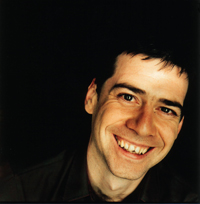

Welcome !
Welcome !  News
News  Call for contributions
Call for contributions- Call for sponsors
 Committee
Committee  Keynotes
Keynotes  Special sessions
Special sessions  Workshops
Workshops - Program
- Artistic Program
- Presentation instructions
- Registration
- Awards
- Important dates
- Author instructions & Submission
- Conference venue
- Accommodation
- Downloads
- Contact us
 Media
Media
latest news
organisers
Craig Vear
Craig Vear is Professor of Digital Performance and Music at De Montfort University, UK, where he was recently awarded a European Research Council project3. Drawing on findings from over a decade’s worth of practice-based experimentation in the field, the author builds a framework for understanding how digital scores create meaning. This book provides a solid foundation for any student/artist/teacher wishing to explore the relationship between notation and technology.
In the author's own words:
Digital technology is transforming the musical score as a broad array of innovative score systems have become available to musicians. From the mediation of printed page, to animated and graphical scores, to artificial intelligence-based options, digital scoring affects the musical process by opening up new possibilities for dynamic interaction between the performer and the music, changing how we understand the boundaries between composition, score, improvisation and performance. The Digital Score: Musicianship, Creativity and Innovation offers a guide into this new landscape, reflecting on what these changes mean for music-making from both theoretical and applied perspectives.
Anne Sèdes
Craig Vear is Professor of Digital Performance and Music at De Montfort University, UK, where he was recently awarded a European Research Council project3. Drawing on findings from over a decade’s worth of practice-based experimentation in the field, the author builds a framework for understanding how digital scores create meaning. This book provides a solid foundation for any student/artist/teacher wishing to explore the relationship between notation and technology.
© Copyright Tenor 2022. All rights reserved.